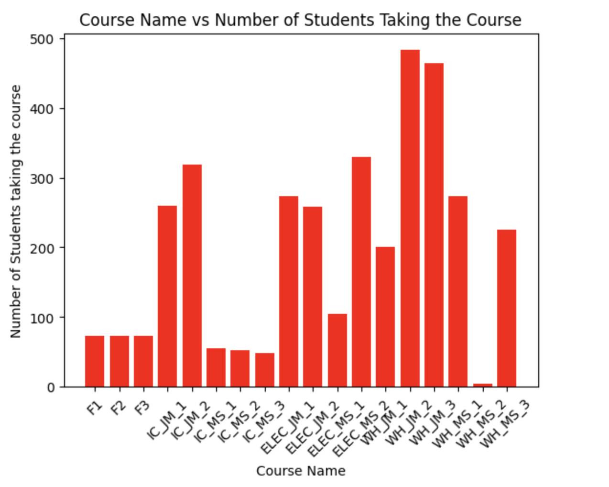
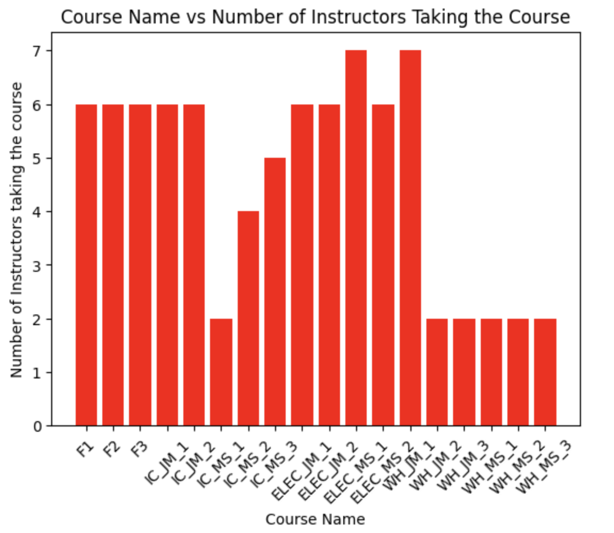
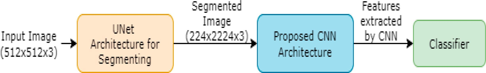
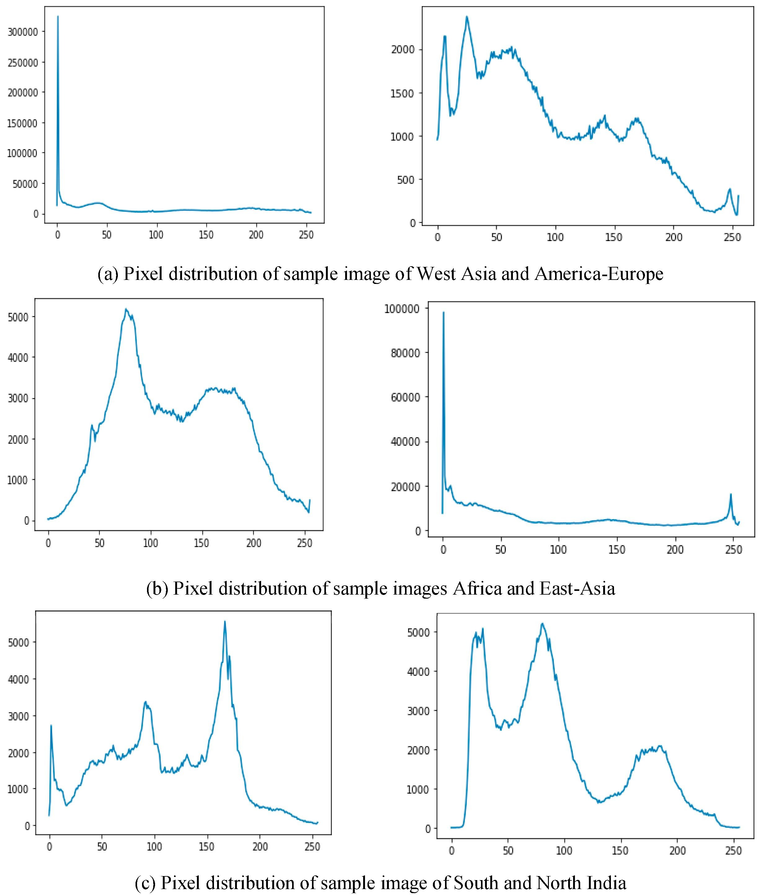

-


About Me
Hi, my name is Jagrut Nemade, and I am a Master's in Data Science Student at University of Wisconsin Madison. My research interests lie in foundations, design and implementing of deep learning and out-of-distribution detection. In 2022, I received my BTech in Computer Science and Engineering from Indian Institute of Information Technology, Dharwad. At IIIT Dharwad I was advised by Dr. Pavan Kumar C. I completed my senior year research titled "A New U-Net based system for multi-cultural wedding image classification" under the guidance of Dr. Shivakumara Palaiahnakote and Dr. Pavan Kumar C which is now published in Elsevier Journal : Expert Systems with Applications.
After my undergrad I worked in Deloitte as a Data Analyst. I worked in Oracle ERP platform, in which I mostly worked on Procurement, Supply chain Management and Inventory modules.
Hobbies
In my leisure time, I enjoy playing tennis, reading and love watching Formula 1 and tennis matches. Love to listen to music, some of my favorite bands include Coldplay, Temper trap. Also love watching movies. I am inspired by trying new things out and always looking out to make social impact.
-
 
Mobile Technician Training Optimization
Wiese USA is a servicer and distributor of Material Handling Equipment (MHE). Wiese has approximately 800 mobile technicians (mechanics) dispersed across 50 faciliEes in 17 states. These technicians receive ongoing technical training from both Wiese and the manufacturers of the equipment they service. Each year, Wiese needs to schedule technical training for each technician in this geographically dispersed workforce. Each locaEon has a diverse group of training needs based on their tenure, training path, and personal advocacy.
Therefore to optimize the cost required, and to increase the overall level of each technician, we built three Mixed integer models. In Model 1, we maximize the number of courses a student can take that will increase their training level. It is an assignment problem. In Model 2, we try to maximize the courses while minimizing the travel time by keeping an upper bound on the travel time. In Model 3, we try to increase the number of instructors to meet the requirement that in a given year, all the students should complete the required maximum number of courses.
We scheduled a plan for organization training plan for one year. We have used the assignment networking problem to assign technicians to their respective locations and weeks. Two important variables- instructor and students/technicians. We have developed a "week-wise" strategy that limits the number of times an instructor can teach to once every four weeks. Additionally, we divided the year into five fractions. This will be useful if the model is just going to be used for a portion of the year and the analysis is not needed for the entire year. * A snapshot of data is displayed*.
Android Malware Classification
The existence of Android Malware has always been a matter of concern as it was a by-product of this great technology. With advancement of this technology many steps were taken to mitigate this threat but with ever evolving technology and expanding user base many new methods have emerged to take advantage of these flaws. Therefore, there is a pressing need to improve our methods of classifying and mitigating these threats. With this project we have tried to create a solution to detect and classify prominent malwares by using various Machine Learning techniques that are creating a menace for android users. This work detects benign and malicious malwares and also classifies malicious malwares in 14 major categories like Adware, Riskware, Trojan to name a few. We tried to improve our results at each step and the best accuracy we got was 67.7% with Random Decision Forest Classifier.
As the dataset was large we sampled the dataset using different statistical techniques such as simple random sampling, stratified random sampling, cluster sampling and systematic sampling.and used that sample to train our model. The sample was compared to original population using hypothesis test. The Dataset has 14 different categories of malicious families, and the data is unbalanced with some categories having more data points than others. In this project we used multiclass data balancing techniques where each class is increased accordingly. The techniques like SMOTE, ADASYN, SMOTE+ENN were implemented to increase the data.
After the data pre processing and balancing we trained traditional ML models and experimented our results. Also built Neural Network Architecture for classification. The results can be found out in the given link provided.
A New U-Net based system for multi-cultural wedding image classification
Identifying where the image might have taken or the clothes wore by people may be helpful for us in various ways. Some applications can be, implementing an end to end sytem to enhance an image based on the culture of the particular place, where it can be used as a first step. At the same time, the same photos can be used for authenticating genuine marriage or fake marriage and kinship verification. Therefore here I have presented novel method based on the combination of U-Net, Convolutional Neural Network and Random Forest for classification of multicultural wedding images.
At first we segmented the region of interest, which included the portions of dresses or costumes with wedding couples. For this task we implemented UNet architecture which has ability to segment irrespective of background complexities. After segmenting region of interest, to extract distinct features for classification of images, we explore the Convolutional Neural Network (CNN) as it has the ability to extract context information between the pixels in the images. Features extracted from CNN architecture is used as an input in Random Forest (RF), for classification of images of different cultures. The reason to use RF for classification is that it does not require a large number of samples and it avoids the cause of overfitting.
The proposed CNN architecture shown in below image can be found in the paper link given below.
 Hope Speech Detection on Social Media Platforms
Over the last few decades, the impact of social media on an individual has increased exponentially, which has led to certain demerits such as cyber bullying. In this project, we built a NLP model to classify social comments based on Hope Speech, Non-Hope Speech and Neutral speech ontology.
The model consists of three units, the pre-processing unit, the feature extraction and data balancing unit, and the classification unit (as shown in the figure). In the pre-processing unit, the dataset is cleaned up by removing unwanted text portions, expanding the abbreviations, and using lemmatization to convert words to their root words. The output of this step is then fed to the feature extraction unit that uses the TF-IDF vectorization technique to identify the importance of specific words or phrases in the dataset. Therefore, the sentences in the dataset are converted to vectors of different values. These vectors are then used to balance the dataset using data balancing methods like SMOTE and ADASYN by adding some synthetic samples
The output from the above steps is given to the final unit, which constitutes various traditional Machine Learning models like Naïve Bayes, Logistic Regression and SVM. These models were implemented using the scikit-learn library available in python. We experimented the result with certain traditional model and also implemented BERT architecture.
.png)
Random Decision Forest approach for Mitigating SQL Injection Attacks
A Structured Query Language injection (SQLi) attack is also commonly referred to as a code injection attack, is a security vulnerability which allows access to data which is intended to be protected and inaccessible to unauthorized personnel. Therefor to mitigate such attacks we proposed a Machine Learning model which used Random Decision Trees as classifier.
We Collected data(malicious sql queries) and identified features which were comment characters, number of semicolons, Logical operators, True conditions, keywords and wildcard characters to streamline the data for better insights. Scored a list of keywords according to their risk factors for better understanding the data. This model was then trained over the new created dataset where we implemented Random Decision Trees classifier.
Deloitte
Data Analyst (Oracle ERP) ------------ Jun' 22 - Jul' 23
Developed Enterprise Resource Planning Services(ERP) services for the client making sure they had smooth business functioning. On the technical side we built Integration and Reports helping their daily operations. Mostly worked on Procurement, Supply Chain Management and Inventory modules in Oracle ERP Cloud. Managed and Presented all my RICE objects to the client for their daily operations. Part of projects where clients needed to shift their business functions from EBS to ERP Cloud. Created Interfaces to tranfer data from EBS to Cloud and also BIP Reports for their daily operations. Have a deep knowledge about SCM module specifically in Cost Accounting and Management. Developed SQL query forbusiness functions involving Cost Accounting.
Have also worked on Procurement module, in which specially designed SQL queries involving Puchase Orders tables, and designed the Cost Management for that particular task. Have built Interfaces, pushing the data from EBS Oracle Suite to ERP Cloud. Also assisted in migration of RICE objects to Prod.